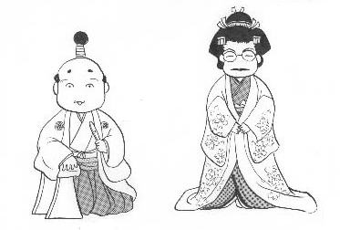

新千年紀、おめでとうございます。_(＿)_
あまりめでたいので、ページのお色直しもしました。（笑）
パソコンなるものに手を触れたのは、今から２０年ほど前。触れただけでなくパソコンスクールにも通ったくらい。当時の愛機は日立のなんとかというマイコン。たしか３０万円くらいした。
スクールでは最初に「これをテンキーといいます」とか、「これがファンクションキー」とかのキーボードの説明の後、いきなりベーシックでのプログラムの作成方法から講義が始まった。今から思うと、教え方がちと乱暴だったと思ふ。(~0~；
おかげで３カ月ほどで簡単ではあるが役に立たないプログラムは作れるようになった。しかし講義はちっとも面白くなかった。そのせいで？、３カ月くらいで棒を折ってしまった。あのまま続けていれば、いま頃、ベテランのプログラマーかも....(_＿；
縁あって５年ほど前再開したが、もう記憶力が減退している。そこでず〜〜っと若い人に迷惑のかけっぱなし。そんなσ(-_-)がホームページをオープンし、新千年紀を迎えることが出来たのは、ひとえに多くの方々のサポートのおかげ。深く深く感謝々々。m(_
_)m
今年は更新ペースが少し遅くなるかも知れませんが、なにとぞよろしくお願いいたします。
|